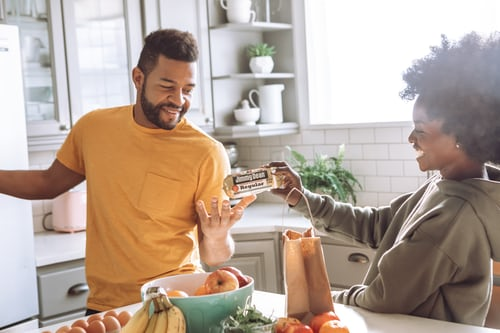

I grew up in a midwestern family that cooked what can be thought of as typical midwestern food, casseroles, meat and potato heavy meals. My mother's father was a beet farmer and she grew up growing all of her own food. My father's father grew up in China but my grandmother did not know how to cook Chinese cuisine.
I began cooking for myself my junior year of college. I bought a Home and Country Cooking magazine from Meijer. The focus of the magazine was 3 and 4 ingredient recipes. I would send the list of ingrediants to my brother during the week. He would purchase the necessary groceries. Then, on the weekend, I would go over and cook a meal for him and his wife. They were a patient audience who allowed me to experiment with flavor combinations. They offered suggestions and always ate what I cooked, no matter how inedible. It was throug this freedom that I learned to enjoy the fun of experimenting in the kitche. Now my inspirations come from a wide variety of cooking magazines, shows, and websites.